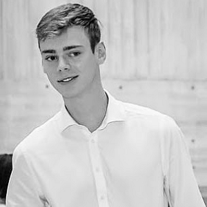

Salvatore Chiavazzo, PhD student

Salvatore finished his Bachelor degree in Physics at University of Naples (Italy), 2017. He acomplished his Master degree in Physics (Condensed Matter training track)
at University of Trieste (Italy), 2019.
During 2019 – Visitor at Institute for Quantum Computing, Waterloo (Canada) to carry out master thesis project. The research stay was funded with the
Extra-Erasmus scholarship.
From 2020 – PhD student at the University of Exeter in the QuDOS group.
Salvatore Chiavazzo research is focused on two-dimensional materials, strong light-matter coupling, and optomechanics.
To date, he has successfully described and characterized of two-phonon cooling in electromechanical systems that operate in microwave domain.
His current research activity includes theoretical description of dipolaritons in TMD bilayers and its application to single photon emission.
Annie Paine, PhD student
Annie received her Bachelor in Mathematics at University of Oxford (UK) 2018. And finished Master degree in Mathematical and Theoretical Physics at
University of Oxford (UK) 2019.
Between years at university she has completed two internships, both of which were programming related. There she improved her programming skills (particularly
in C++, Python and Rust) as well as experiencing working in a team in a professional setting. At her second internship with Metaswitch Annie gained experience in
presenting her works progress and results as she was placed in a team which had daily meetings in which everyone reported their progress.
From 2020 Annie is a PhD student in Quantum Computing group under the supervision of Dr. Kyriienko at the University of Exeter.
Her project is focused on finding useful quantum algorithms for near term quantum devices. To deal with the limitations of near term quantum devices she is
particularly interested in hybrid and variational approaches. The areas of application that she is focused on include differential equations, which permeate many
different areas of study, and finding the ground state energy of a system, a question of great interest in computational Chemistry.
Tatiana Bespalova, MSc student as a part of research collaboration

Tatiana has accomplished her Bachelor degree in Applied Mathematics and Physics at Saint Petersburg Academic University (Saint Petersburg, Russia), 2019.
From 2019 Tatiana is a MSc student at ITMO University (Saint Petersburg, Russia).
Her research during the education included performing molecular modeling and also an exploration of nonperturbative effects in quantum field theory. She hopes to
develop or realize quantum algorithms to solve some of the problems in these areas one day. After her bachelor graduation she has decided to take the challenge of
exploring the area of quantum computations. As there is no courses on this topic in Russia she has studied it by herself with the book of Nielsen and Chuang and other
literature. Having got the basic knowledge in the field of quantum computations she started research on Hamiltonian operator simulation.
In 2020 Tatiana applied for an internship at University of Exeter as a part of research collaboration with QuDOS group and to work personally with
Dr. Oleksandr Kyriienko as her superviser to perform a research on Hamiltonian operator simulation.
Daniel Winter, MSc student

Daniel is a MSc student at the University of Exeter accomplishing his project under supervision of Dr. Kyriienko.
His current ambitions for the future are to progress in the aerospace industry through upcoming 10 week internship at Rolls-Royce, to develop more generally his
coding skills and understanding of engineering.
Daniel has experience with the programming languages Python, C and Julia. In addition, he has used NX CAD modelling software during his time redesigning the
RB199 High-Pressure Compressor shaft on a week’s work experience for Rolls-Royce.
Daniel can be contacted via LinkedIn profile and email.
Paule Taylor, MSc student

Paul has recently begun his MSc project on simulating time translational symmetry breaking with quantum computers.
He is interested in various aspects of quantum theory, and specifically quantum simulation of many-body dynamics. As a first step, he has run discrete time crystal evolution with various Qiskit back-ends, and benchmarked it with IBM Quantum devices available on a cloud.
His other interests include elementary particle physics.
Paul can be contacted via LinkedIn profile and email.
Kieron Lintott, MSc student

Kieron Lintott is a third year MSc Physics student at the University of Exeter working on quantum time crystal project under supervision of Dr. Kyriienko.
His interests lie in Quantum Mechanics and Theoretical Physics, and more generally solving challenging problems.
Kieron constantly develops new computational skills, and is an enthusiast of collaborative coding. He programmes in Python, Julia, C, and explores various machine learning approaches.
Kieron can be contacted via LinkedIn profile and email.